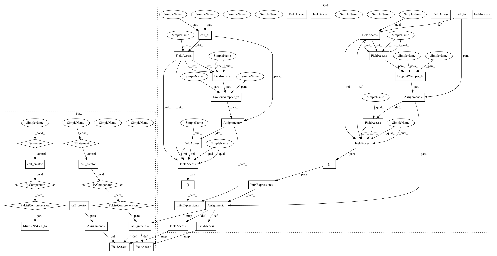

edc5cf0c0e22b02d52de1b2e3ab89daceaa70c97,tensorlayer/layers.py,BiRNNLayer,__init__,#BiRNNLayer#Any#Any#Any#Any#Any#Any#Any#Any#Any#Any#Any#Any#Any#,3509
Before Change
raise Exception("RNN : Input dimension should be rank 3 : [batch_size, n_steps, n_features]")
with tf.variable_scope(name, initializer=initializer) as vs:
self.fw_cell = cell_fn(num_units=n_hidden, **cell_init_args)
self.bw_cell = cell_fn(num_units=n_hidden, **cell_init_args)
// Apply dropout
if dropout:
if type(dropout) in [tuple, list]:
in_keep_prob = dropout[0]
out_keep_prob = dropout[1]
elif isinstance(dropout, float):
in_keep_prob, out_keep_prob = dropout, dropout
else:
raise Exception("Invalid dropout type (must be a 2-D tuple of "
"float)")
try: // TF 1.0
DropoutWrapper_fn = tf.contrib.rnn.DropoutWrapper
except:
DropoutWrapper_fn = tf.nn.rnn_cell.DropoutWrapper
self.fw_cell = DropoutWrapper_fn(
self.fw_cell,
input_keep_prob=in_keep_prob,
output_keep_prob=out_keep_prob)
self.bw_cell = DropoutWrapper_fn(
self.bw_cell,
input_keep_prob=in_keep_prob,
output_keep_prob=out_keep_prob)
// Apply multiple layers
if n_layer > 1:
try: // TF1.0
MultiRNNCell_fn = tf.contrib.rnn.MultiRNNCell
except:
MultiRNNCell_fn = tf.nn.rnn_cell.MultiRNNCell
try:
self.fw_cell = MultiRNNCell_fn([self.fw_cell] * n_layer,
state_is_tuple=True)
self.bw_cell = MultiRNNCell_fn([self.bw_cell] * n_layer,
state_is_tuple=True)
except:
self.fw_cell = MultiRNNCell_fn([self.fw_cell] * n_layer)
self.bw_cell = MultiRNNCell_fn([self.bw_cell] * n_layer)
// Initial state of RNN
if fw_initial_state is None:
self.fw_initial_state = self.fw_cell.zero_state(self.batch_size, dtype=tf.float32)
else:
self.fw_initial_state = fw_initial_state
if bw_initial_state is None:
self.bw_initial_state = self.bw_cell.zero_state(self.batch_size, dtype=tf.float32)
else:
self.bw_initial_state = bw_initial_state
// exit()
After Change
else:
cell_creator = rnn_creator
self.fw_cell = cell_creator()
self.bw_cell = cell_creator()
// Apply multiple layers
if n_layer > 1:
try: // TF1.0
MultiRNNCell_fn = tf.contrib.rnn.MultiRNNCell
except:
MultiRNNCell_fn = tf.nn.rnn_cell.MultiRNNCell
try:
self.fw_cell = MultiRNNCell_fn([cell_creator() for _ in range(n_layer)], state_is_tuple=True)
self.bw_cell = MultiRNNCell_fn([cell_creator() for _ in range(n_layer)], state_is_tuple=True)
except:
self.fw_cell = MultiRNNCell_fn([cell_creator() for _ in range(n_layer)])
self.bw_cell = MultiRNNCell_fn([cell_creator() for _ in range(n_layer)])
// Initial state of RNN
if fw_initial_state is None:
self.fw_initial_state = self.fw_cell.zero_state(self.batch_size, dtype=tf.float32)
else:
self.fw_initial_state = fw_initial_state
if bw_initial_state is None:
self.bw_initial_state = self.bw_cell.zero_state(self.batch_size, dtype=tf.float32)
else:
self.bw_initial_state = bw_initial_state
// exit()
In pattern: SUPERPATTERN
Frequency: 4
Non-data size: 39
Instances
Project Name: tensorlayer/srgan
Commit Name: edc5cf0c0e22b02d52de1b2e3ab89daceaa70c97
Time: 2017-06-06
Author: dhsig552@163.com
File Name: tensorlayer/layers.py
Class Name: BiRNNLayer
Method Name: __init__
Project Name: tensorlayer/srgan
Commit Name: edc5cf0c0e22b02d52de1b2e3ab89daceaa70c97
Time: 2017-06-06
Author: dhsig552@163.com
File Name: tensorlayer/layers.py
Class Name: BiDynamicRNNLayer
Method Name: __init__
Project Name: tensorlayer/tensorlayer
Commit Name: dcef47168e1d630fe02634f6a542df0c3571228d
Time: 2017-05-15
Author: chentao904@163.com
File Name: tensorlayer/layers.py
Class Name: BiRNNLayer
Method Name: __init__
Project Name: tensorlayer/srgan
Commit Name: edc5cf0c0e22b02d52de1b2e3ab89daceaa70c97
Time: 2017-06-06
Author: dhsig552@163.com
File Name: tensorlayer/layers.py
Class Name: BiRNNLayer
Method Name: __init__
Project Name: tensorlayer/tensorlayer
Commit Name: dcef47168e1d630fe02634f6a542df0c3571228d
Time: 2017-05-15
Author: chentao904@163.com
File Name: tensorlayer/layers.py
Class Name: BiDynamicRNNLayer
Method Name: __init__